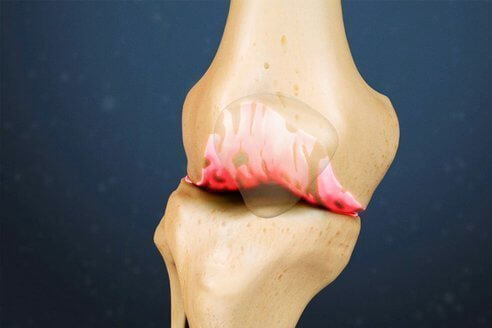
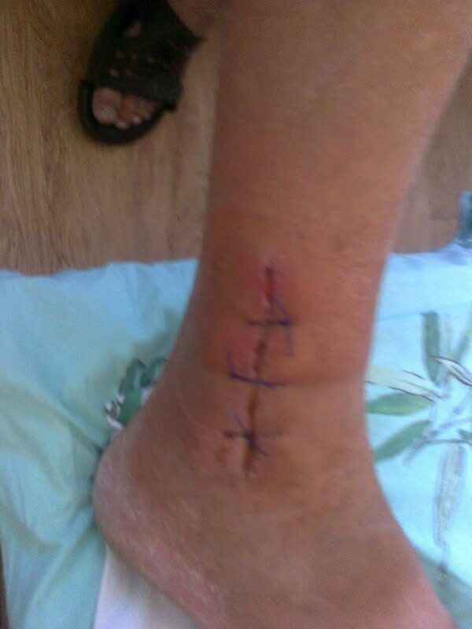

जोड़ों के दर्द का इलाज कैसे करें
मैं आपको कहानी बताना चाहता हूं कि कैसे मैंने ऑस्टियोआर्थराइटिस के कारण अपने घुटनों में दर्द को दूर किया और ओस्टियोचोन्ड्रोसिस मेरी पीठ के छोटे हिस्से में। मैं डॉक्टर नहीं हूं, इसलिए मैं आपको यह नहीं बताने जा रहा हूं कि इसका इलाज कैसे किया जाता है, मैं आपको सिर्फ यह बताने जा रहा हूं कि क्या हुआ था।
मेरी उम्र 62 साल है और मैं सेवानिवृत्त हो गया हूं। सेवानिवृत्त होने से पहले, मैंने एक धातुकर्म संयंत्र की भट्टी में काम किया। पहले तो मैं किसी अन्य की तरह एक कार्यकर्ता था, लेकिन फिर मैंने एक सुरक्षा इंजीनियर के रूप में काम करना शुरू कर दिया। जो लोग इस पेशे को जानते हैं, वे जानते हैं कि यह नौकरी एक धातु कार्यकर्ता से बहुत अलग है। ये बस लोहे को उबालते हैं, आपको बस कुछ बटन दबाना है। हमने सब कुछ पुराने ढंग से किया। यदि आवश्यक हो, तो हम एक फावड़ा और कभी-कभी एक कौवा भी इस्तेमाल करते थे। सतह अविश्वसनीय रूप से गर्म थी, और हवा के निरंतर झोंकों से बचना असंभव था। मैंने उस जगह पर अपने घुटनों और अपनी पीठ को खराब कर लिया।
लगातार दर्द दिखने पर सीधा नकारात्मक प्रभाव डालता है। मेरी उम्र सिर्फ 3 साल में बहुत हो गई है।
यह सकारात्मक है कि मुझे अपनी वर्षों की सेवा के कारण 50 वर्ष की आयु में सेवानिवृत्त होना पड़ा। मेरे पास कोई ताकत नहीं बची थी। मैं पिछले साल खुद का समर्थन करने में सक्षम था, धन्यवाद दर्द निवारक इंजेक्शन . मैं भाग्यशाली था कि उन्होंने मुझे एक इंजीनियर के रूप में वह पद दिया। वह काम बहुत आसान था, बॉयलर से दूर। यह मेरे स्वास्थ्य के लिए अच्छा था, इसका मुझ पर सकारात्मक प्रभाव पड़ा। दर्द कम हो गया, मैं कुछ समय के लिए बिना दर्द निवारक दवाओं के भी जा सका। लेकिन रिटायर होने के तीन साल पहले मेरा एक्सीडेंट हो गया था। मछली पकड़ने के दौरान मेरे पैर में चोट लग गई। दर्द के झटके और लगातार दर्द निवारक दवाओं ने मेरी नाजुक स्थिति को प्रभावित किया, और मैं अपने घुटनों और पीठ में तेज दर्द से पीड़ित होने लगा।

इस दुर्घटना के कारण मेरा गठिया काफी तेजी से बढ़ने लगा।
मैं उस समय को याद भी नहीं करना चाहता। मैं नरक के माध्यम से रहता था! सुबह मेरी पत्नी ने मुझे डाइक्लोफेनाक दिया, फिर मैंने काम के दौरान एक और घर पर घर आने पर दूसरी ली। आपको आश्चर्य होगा कि मैंने संन्यास क्यों नहीं लिया। मैं अपने बेटे की मदद कर रहा था। उसका एक नवजात बच्चा था और उसकी नौकरी चली गई थी। मुझे उसकी मदद करनी थी।
पिछले साल मैं बेंत लेकर चला। अगले मेडिकल चेकअप से पहले, मैंने इस्तीफे का पत्र लिखा था। मुझे अभी भी हार माननी थी।
मैं कैसे ठीक हुआ
मेरे जोड़ों के रोगों के लंबे इतिहास के आधार पर, मैं कह सकता हूं कि डॉक्टरों को उनके इलाज के लिए कुछ उपचारों के बारे में पता है। कभी-कभी केवल एक चीज जो वे लिखते हैं, वह है डिपरोस्पैन।
यह मदद नहीं करता है!
इसके अलावा, लगातार लेना डाइक्लोफेनाक का दर्द को दूर करने के लिए, पेट खराब का कारण बनता है। उन्हें गैस्ट्रिक प्रोटेक्टर भी लेना पड़ा।
वास्तव में प्रभावी उपचार की तलाश में, मेरे घुटनों में तरल पदार्थ को निकालने के लिए मेरे 4 पंक्चर थे। आखिरी पंचर के दौरान मवाद भी निकला। डॉक्टर ने मुझे बताया कि इस बात की बहुत संभावना है कि मुझे जल्द ही सर्जरी की आवश्यकता होगी, एक कृत्रिम अंग। वे मेरे पहले से बेकार घुटनों को बदलने के लिए टाइटेनियम घुटनों में डाल देंगे। मैंने इसके बारे में पढ़ना शुरू किया। यह पता चला कि सर्जरी सफल होने पर भी उसे बेंत लेकर चलना होगा। सर्जरी में कम से कम $4,000 खर्च हुए। वह जर्मन प्रोस्थेटिक्स की कीमत है; हालांकि हमारे $1000 सस्ते हैं, लेकिन इनके साथ जटिलताओं के जोखिम अधिक हैं। मैंने चीजों के बारे में सोचने के लिए अपना समय निकालने का फैसला किया।
मेरे भाग्य के बारे में सोचने के लिए।
मुझे एहसास हुआ कि मेरे पास कोई विकल्प नहीं था। लेकिन उसके पास इतने पैसे नहीं थे!
मैंने अपनी पत्नी के साथ इस पर बहुत चर्चा की (वह बहुत अच्छा कर रही थी) और सर्जरी कराने का फैसला किया। 61 साल की उम्र में, जीवन अभी खत्म नहीं हुआ है... और जहां तक पैसे की बात है, तो इसे खर्च करने के लिए यही है।
तभी चमत्कार हुआ!
मैं वास्तव में इसे अपनी पत्नी के लिए ऋणी हूं। मेरा एक दोस्त था, एक पुलिस अधिकारी की पत्नी। मेरे जैसे ही उसके पति के घुटनों में दर्द हुआ था। खैर, मेरे जितना नहीं।
एक दिन मेरी पत्नी सड़क पर चल रही थी कि एक कार उसके बगल में आकर खड़ी हो गई। अधिकारी अपने घुटने पर पट्टी बांधकर अपनी कार से बाहर निकला।
उसी दिन सुमन (मेरी पत्नी) ने अपने दोस्त को फोन किया और पूछा कि क्या उसका पति अपने घुटनों के साथ ठीक है। उसने उसे हाँ कहा, लेकिन उसकी सर्जरी नहीं हुई थी। और बहुत अच्छा लगा।
मेरी पत्नी ने मुझे बचाया, इसके लिए मैं उनका बहुत आभारी हूं।
पता चला कि इस आदमी ने एक पहना हुआ था नए उत्पाद - . उसके पति ने इसका इस्तेमाल किया और एक महीने में यह नए जैसा अच्छा हो गया। मैं इसे फिर से कहूंगा: एक महीना!
हम बहुत उत्साहित हैं लेकिन साथ ही निराश भी हैं क्योंकि उत्पाद हमारे देश में नहीं बेचा जाता है। हम नहीं जानते कि इसे भारत में कैसे लाया जाए, इसलिए मैं सर्जरी की तैयारी करता रहा।
डेढ़ महीने बाद, सुमन ने अपने दोस्त को फोन किया, जिसने उसे बताया कि उत्पाद हमारे देश में पहले से ही उपलब्ध था। मेरी पत्नी ने अपने दोस्त से इसकी पुष्टि की... यह सच था! अब हम उत्पाद खरीद सकते थे, लेकिन केवल आधिकारिक वेबसाइट से। मुझे लगता है कि मैं इसे खरीदने वाले पहले ग्राहकों में से एक था!

मैंने इसे अपने घुटनों और पीठ पर लगाना शुरू कर दिया। और... इसका असर होना शुरू हो गया! पहले तो मुझे लगा कि इसकी रचना में एनेस्थीसिया है, क्योंकि इसे लगाने के लगभग 5-10 मिनट बाद दर्द गायब हो गया। मुझे बहुत अच्छा लगा, कोई दर्द नहीं था। सच कहूं तो मैंने बहुत पहले ही हार मान ली थी। काश मैंने अपने घुटनों का अधिक ख्याल रखा होता। मैं पहले से ही सर्जरी से गुजरने वाला था! लेकिन उत्पाद को लागू करने के एक हफ्ते बाद, मैं बिना किसी समस्या के अपने पैरों को फ्लेक्स कर सकता था और जूते के सींग का उपयोग किए बिना अपने जूते पहन सकता था।
2 सप्ताह में मैं पहले से ही दर्द महसूस किए बिना डेढ़ घंटे चल सकता था। मैं ठीक हो रहा था! दो हफ्ते बाद मैंने खुद को पहले से ही एक स्वस्थ व्यक्ति माना... मुझे कोई दर्द नहीं हुआ! मैं बिना किसी समस्या के झुक सकता था, लंबे समय तक चल सकता था और साइकिल की सवारी कर सकता था।
एक बार फिर मैं अपनी बाइक पर चढ़ सका और सीधे 2 घंटे चल पाया।
मुझे ठीक हुए 6 महीने हो चुके हैं। कोई दर्द नहीं! भले ही मैंने इस्तेमाल करना बंद कर दिया महिनो पहले . अब मैं फिर से मछली पकड़ने जाता हूं, घर के बगीचे में काम करता हूं और अपने पोते की देखभाल करता हूं। मैं और मेरी पत्नी देश के दक्षिण की यात्रा की योजना बना रहे हैं! यह कितनी खूबसूरत होगी इसके बारे में हम बात करते रहते हैं।
जब आप स्वस्थ होते हैं, तो अपने पोते-पोतियों के साथ खेल आपको क्रोधी नहीं बनाते, बल्कि आपको आनंदित करते हैं।
तो, अगर आपको गठिया या कोई अन्य हड्डी या जोड़ों और पीठ की बीमारी है, तो इस जानकारी पर ध्यान दें: - जोड़ों को ठीक करें !
गणेश महात्मा

"मैं उपयोग कर रहा हूँ दो सप्ताह के लिए और मैं इसे प्यार करता हूँ। मुझे अपने जोड़ों के दर्द का कोई समाधान नहीं मिला। यह क्रीम बहुत उपयोगी है, मैंने इसे प्रभावित क्षेत्रों पर लगाया और अगले दिन तक दर्द के बारे में भूल गया। यह बहुत प्रभावी है, जब भी मुझे दर्द होता है, मैं इसका इस्तेमाल करता हूं और मुझे 5 मिनट में राहत महसूस होती है।"